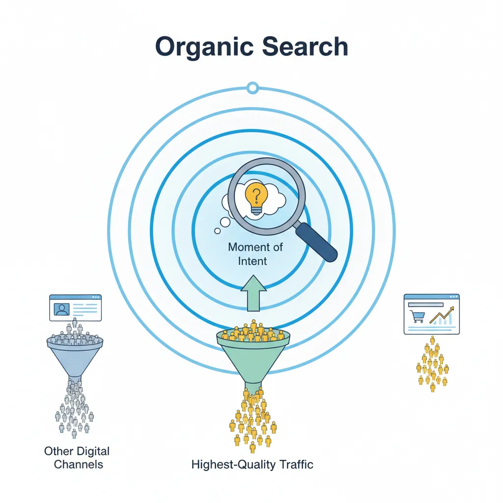
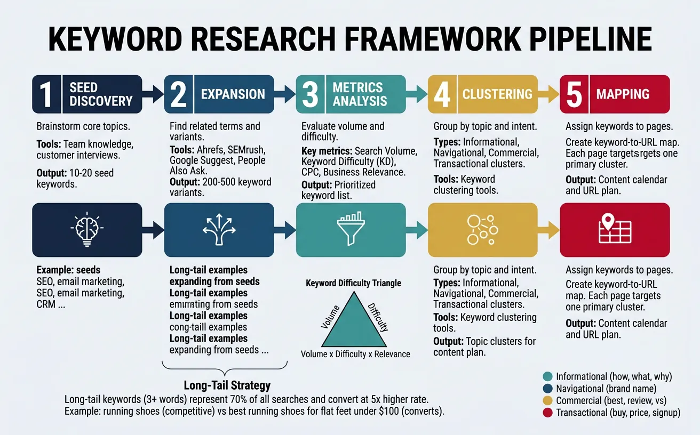
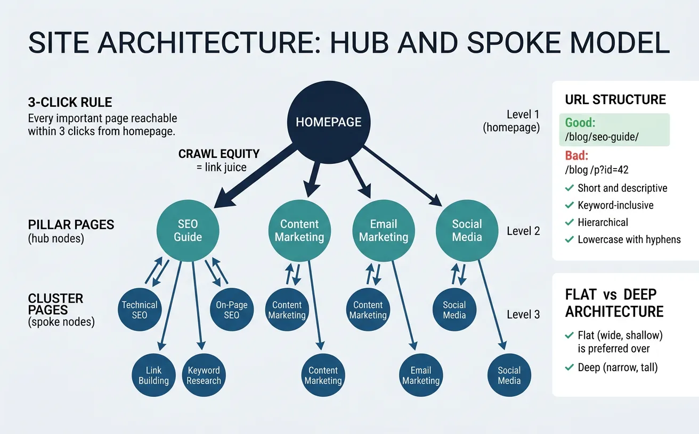
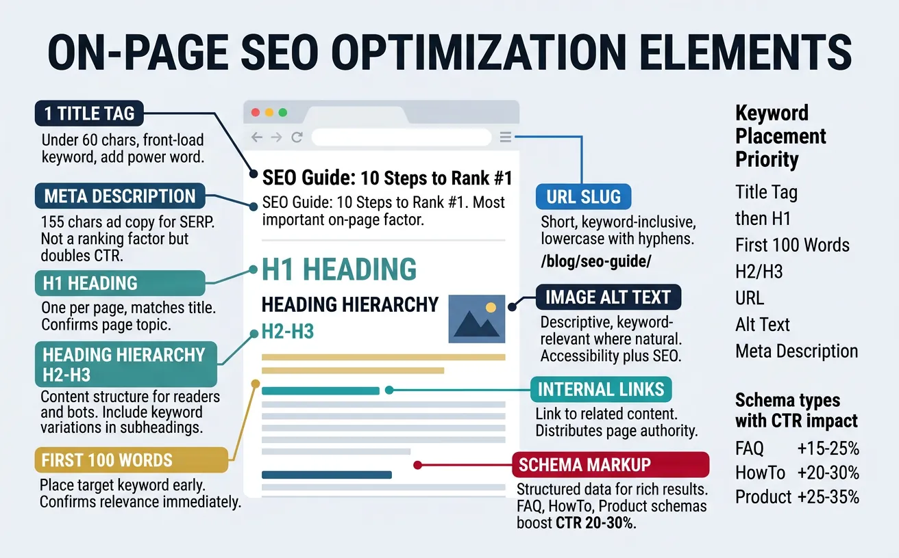
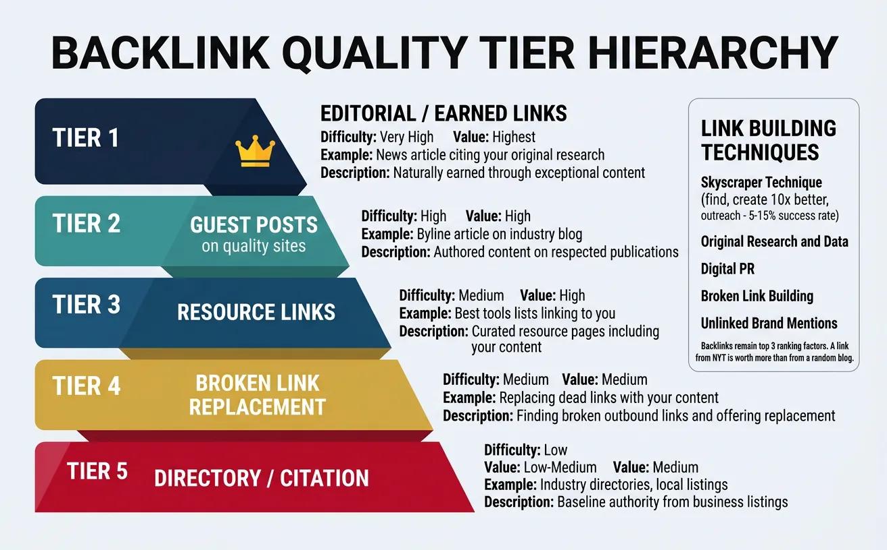

We use cookies to enhance your browsing experience, serve personalized content, and analyze our traffic.
By clicking "Accept All", you consent to our use of cookies. See our
Privacy Policy
for more information.
Marketing & Strategy Series Part 4: SEO & Search Marketing
February 12, 2026Wasil Zafar25 min read
Master technical SEO, on-page optimization, link building strategies, local SEO, and AI-powered search optimization to drive sustainable organic growth.
Part 4 of 21: With brand foundations established in Part 3, this article dives into search engine optimization—the art and science of making your content discoverable when customers are actively searching for solutions.
Think of SEO as building a library that a librarian can easily navigate. The librarian (Google) needs to find your books (pages), understand what they're about (relevance), and decide which ones are most trustworthy (authority). Without proper organization, even the best books gather dust on forgotten shelves.
SEO drives the highest-quality traffic because these visitors are actively searching for solutions. Unlike paid ads where you interrupt people, organic search captures demand at the moment of intent. A well-optimized page can generate traffic for years — making SEO one of the highest-ROI marketing channels.

Organic search captures demand at the moment of intent, delivering the highest-quality traffic among digital channels
How Search Engines Work
Google processes search through three stages: crawling (discovering pages), indexing (understanding content), and ranking (ordering results). Understanding each stage reveals where most SEO problems originate.
Stage
What Happens
Analogy
Key Factor
Crawling
Googlebot follows links to discover pages
A spider exploring a web
Crawl budget, robots.txt
Indexing
Content is parsed, categorized, stored
Librarian cataloging a book
Content quality, structure
Ranking
Algorithm scores pages for relevance
Librarian recommending the best book
200+ ranking signals
Google's Algorithm Evolution
Google's ranking has evolved from simple keyword matching to sophisticated AI understanding:
Era
Update
Focus
Impact
2011
Panda
Content quality
Penalized thin, duplicate content
2012
Penguin
Link spam
Penalized manipulative link building
2013
Hummingbird
Semantic search
Understanding query meaning, not just keywords
2015
RankBrain
Machine learning
AI interprets ambiguous queries
2019
BERT
Natural language
Understanding context and prepositions
2022
Helpful Content
User-first content
Rewards content written for humans, not search engines
2023+
SGE / AI Overviews
Generative AI
AI-generated summaries above organic results
E-E-A-T: Google's Quality Framework
Google's Search Quality Raters evaluate pages using E-E-A-T — the four pillars of content quality:
E-E-A-T Breakdown:Experience (first-hand knowledge) → Expertise (deep subject knowledge) → Authoritativeness (recognized in the field) → Trustworthiness (accurate, honest, safe). Trustworthiness is the most important factor — the other three support it.
E-E-A-T matters most for YMYL (Your Money, Your Life) topics — health, finance, legal, safety — where bad information can cause real harm. But it applies to all content: Google wants to surface information from credible sources.
Search Intent Mapping
Search intent is the "why" behind every query. Like a shopkeeper reading body language — some visitors are browsing (informational), some know what they want (navigational), and some have their wallet out (transactional). Matching content to intent is the single most important ranking factor.
Intent Type
Signal Words
Example Query
Best Content Format
SERP Features
Informational
how, what, why, guide
"how to improve page speed"
Blog post, guide, tutorial
Featured snippet, PAA
Navigational
brand name, login, app
"Google Search Console login"
Homepage, tool page
Sitelinks
Commercial
best, review, vs, compare
"best SEO tools 2026"
Comparison, review, listicle
Rich snippets, images
Transactional
buy, price, discount, sign up
"Ahrefs pricing monthly"
Product page, pricing page
Ads, shopping results
The SERP Analysis Method
Practical Technique
Before creating any page, Google your target keyword and study the first page results. The SERP tells you exactly what Google thinks the intent is. If the top 10 results are all "how-to guides," Google considers that keyword informational — publishing a product page will fail. If the top results are comparison tables, create a comparison. The SERP is your blueprint.
Keyword Research
Keyword research is market research for search. It reveals what your audience actually searches for, how they phrase questions, and where the competitive gaps exist. Think of it as listening to millions of customer conversations simultaneously.

The keyword research pipeline: seed discovery, expansion, metrics analysis, clustering, and mapping to content
The Keyword Research Framework
Step
Action
Tools
Output
1. Seed Discovery
Brainstorm core topics
Team knowledge, customer interviews
10-20 seed keywords
2. Expansion
Find related terms
Ahrefs, SEMrush, Google Suggest
200-500 keyword variants
3. Metrics Analysis
Evaluate volume & difficulty
Keyword tools, SERP analysis
Prioritized keyword list
4. Clustering
Group by topic & intent
Keyword clustering tools
Topic clusters for content plan
5. Mapping
Assign keywords to pages
Spreadsheet, CMS
Keyword-to-URL map
Long-Tail Strategy: The 80/20 of SEO
Long-tail keywords (3-5+ words) have lower search volume individually but collectively represent ~70% of all searches. They convert better because they're more specific. "Running shoes" is fiercely competitive; "best running shoes for flat feet under $100" converts at 5x the rate.
The Keyword Difficulty Triangle: Choose keywords where you can win. Balance three factors: Search Volume (enough people searching) × Keyword Difficulty (competition level you can beat) × Business Relevance (aligns with your product/service). A keyword with 50 monthly searches that converts at 20% beats a 10,000-volume keyword where you'll never rank.
Semantic Keyword Clustering
Modern SEO targets topics, not individual keywords. Google understands synonyms, related concepts, and entity relationships. Instead of creating separate pages for "email marketing tips," "email campaign best practices," and "how to improve email open rates," create one comprehensive page covering the entire topic cluster.
Technical SEO
Site Architecture
Site architecture is the blueprint of your website. Think of it like a department store: a well-organized store has clear departments (categories), logical floor plans (navigation), and helpful signage (breadcrumbs). A messy store frustrates shoppers — and search engines.

Flat site architecture with hub-and-spoke linking distributes crawl equity and improves discoverability
URL Structure Best Practices
Principle
Good Example
Bad Example
Why It Matters
Short & descriptive
/blog/seo-guide/
/p?id=42&cat=7&ref=seo
Users and bots understand the topic
Keyword-inclusive
/shoes/running-shoes/
/products/cat3/item847/
URL is a ranking signal
Hierarchical
/blog/seo/technical-seo/
/technical-seo-guide-2026/
Shows content relationships
Lowercase, hyphens
/link-building-tips/
/Link_Building_Tips/
Consistency avoids duplicate content
No trailing params
/pricing/
/pricing/?utm_source=google
Clean canonical URLs
The 3-Click Rule & Flat Architecture
Every important page should be reachable within 3 clicks from the homepage. Deep pages (5+ clicks deep) get crawled less frequently and receive less link equity. A flat architecture means more pages closer to the root — like a wide, shallow puddle rather than a narrow well.
Hub & Spoke Model: Create "pillar pages" (hubs) that link to related "cluster pages" (spokes). Example: A pillar page on "SEO Guide" links to spokes on "Technical SEO," "Link Building," "Keyword Research," etc. Each spoke links back to the hub. This structure signals topical authority to Google and distributes link equity efficiently.
Core Web Vitals
Core Web Vitals are Google's user experience metrics that directly impact rankings. They measure what users actually experience — not just server performance. Think of them as a restaurant's health inspection score: invisible to most diners, but critical for staying open.
Metric
Full Name
Measures
Good Target
Common Fix
LCP
Largest Contentful Paint
Loading speed (when main content appears)
< 2.5 seconds
Optimize images, use CDN, reduce server response time
INP
Interaction to Next Paint
Responsiveness (how fast page reacts to input)
< 200 milliseconds
Minimize JavaScript, defer non-critical scripts
CLS
Cumulative Layout Shift
Visual stability (elements jumping around)
< 0.1
Set image dimensions, reserve ad space, use font-display
Case Study: The BBC's Speed Tax
Real-World Impact
The BBC found that for every additional second of page load time, they lost 10% of users. A page that loads in 3 seconds retains 90% of visitors. At 5 seconds, only 70% remain. At 10 seconds, over half have left. Google confirmed that page speed became a mobile ranking factor — slow pages literally rank lower. Speed isn't a nice-to-have; it's a ranking signal.
Mobile-First Indexing
Google now uses the mobile version of your site as the primary version for indexing and ranking. Even if 80% of your traffic comes from desktop, Google judges your site by how it performs on mobile. Ensure responsive design, touch-friendly elements, and identical content between mobile and desktop versions.
Crawlability & Indexing
If Google can't find or understand your pages, they don't exist in search results. Crawlability and indexing are the foundation everything else builds on — like ensuring your store actually has an address and is listed in the phone book.
Robots.txt & XML Sitemaps
Tool
Purpose
Location
Key Rules
robots.txt
Tell crawlers what NOT to crawl
/robots.txt
Block admin pages, staging, duplicate areas
XML Sitemap
Tell crawlers what TO index
/sitemap.xml
Include all important pages, exclude noindex pages
Canonical tags
Declare the "original" version
<link rel="canonical">
Consolidate duplicate/similar pages
Hreflang
Language/region targeting
<link rel="alternate" hreflang>
For multi-language sites
Meta robots
Page-level crawl directives
<meta name="robots">
noindex, nofollow for thin/private pages
Crawl Budget Optimization
Google allocates a crawl budget — the number of pages it will crawl on your site per visit. For sites with fewer than 10,000 pages, this rarely matters. For large e-commerce sites with millions of URLs, it's critical. Wasting crawl budget on error pages, duplicate content, or parameter URLs means important pages get discovered later.
The Index Bloat Problem: Having too many indexed pages can hurt rankings. A site with 50,000 pages where only 5,000 are valuable dilutes quality signals. Use Google Search Console's "Pages" report to identify indexed pages that shouldn't be — thin, duplicate, or low-value URLs. Prune aggressively: noindex or remove pages that add no search value.
On-Page SEO
Content Optimization
On-page SEO is about making each page the best possible answer for its target keyword. Think of it like preparing a meal for a food critic: the ingredients (content) must be excellent, the presentation (structure) must be appealing, and the experience (UX) must be memorable.

Key on-page SEO elements: title tags, heading hierarchy, keyword placement, and structured data working together
Title Tag Optimization
The title tag is the single most important on-page factor. It appears in search results, browser tabs, and social shares. A great title tag is a mini-advertisement for your page.
Rule
Example
Why
Keep under 60 characters
"SEO Guide: 10 Steps to Rank #1 (2026)"
Google truncates longer titles
Front-load the keyword
"Link Building: 12 Proven Strategies"
Google weights early words more
Include a power word
"Ultimate," "Proven," "Complete"
Increases CTR by 10-15%
Add the year (if relevant)
"Best SEO Tools (2026)"
Signals freshness
Unique per page
No two pages should share a title
Avoids cannibalization
Content Structure for Rankings
Well-structured content helps both readers and search engines. Google uses heading hierarchy (H1 → H2 → H3) to understand content organization, similar to how a book uses chapters and sections.
The Skyscraper Content Formula: Find the current best-ranking page for your keyword. Make your content more comprehensive (cover more subtopics), more current (updated data and examples), better designed (visuals, tables, diagrams), and more actionable (templates, checklists, tools). Then promote it to earn links. This is Brian Dean's "Skyscraper Technique" — and it works because Google rewards the best answer.
Keyword Placement Strategy
Place your target keyword in these high-priority positions, but write naturally — keyword stuffing triggers penalties:
Title tag — Primary keyword, front-loaded
H1 heading — One per page, matches or closely mirrors the title
First 100 words — Confirms relevance immediately
H2/H3 subheadings — Include keyword variations and related terms
URL slug — Short, keyword-inclusive
Image alt text — Descriptive, keyword-relevant where natural
Meta description — Not a ranking factor, but affects CTR
Meta Tags & Structured Data
Meta tags give search engines explicit signals about your content. While meta descriptions don't directly affect rankings, they're your "ad copy" in search results — a compelling description can double your click-through rate.
Schema.org Structured Data
Structured data is a language search engines understand perfectly. Adding Schema markup to your pages enables rich results — star ratings, FAQ accordions, breadcrumbs, product prices, and more. Pages with rich results see 20-30% higher CTR than plain results.
Schema Type
Rich Result
Best For
CTR Impact
FAQ
Expandable Q&A below listing
Informational pages
+15-25% CTR
HowTo
Step-by-step instructions
Tutorial content
+20-30% CTR
Product
Price, availability, reviews
E-commerce pages
+25-35% CTR
Article
Author, date, image
Blog posts, news
+10-15% CTR
LocalBusiness
Map, hours, reviews
Physical locations
+30-40% CTR
BreadcrumbList
Navigation path
All pages
+5-10% CTR
Internal Linking
Internal linking is the most underutilized SEO tactic. While everyone chases backlinks, internal links are entirely within your control. They distribute "link equity" (ranking power) throughout your site, help Google discover new pages, and establish content hierarchy.
Link Equity Flow
Think of link equity like water flowing through pipes. Your homepage receives the most external links (highest pressure). Internal links distribute that pressure to deeper pages. Pages with more internal links pointing to them rank higher — you're telling Google "this page is important."
Case Study: NinjaOutreach Internal Linking Experiment
Measurable Results
NinjaOutreach ran a controlled experiment: they added internal links from high-authority pages to underperforming content. The target pages saw a 40% increase in organic traffic within 60 days, with some pages jumping 20+ positions in rankings. No content changes, no new backlinks — just strategic internal linking. This demonstrates the compounding power of distributing existing authority to pages that need it.
Off-Page & Advanced SEO
Link Building Strategies
Backlinks remain one of the top 3 ranking factors. Each quality backlink is a "vote of confidence" from another website. But not all votes are equal — a link from the New York Times is worth more than a link from a random blog, just as an endorsement from an industry expert carries more weight than a stranger's opinion.

Backlink quality hierarchy: editorial and earned links provide the highest authority, while directories offer baseline value
Link Building Quality Hierarchy
Tier
Link Type
Difficulty
Value
Example
Tier 1
Editorial / Earned
Very High
Highest
News article citing your research
Tier 2
Guest Posts (quality sites)
High
High
Byline article on industry blog
Tier 3
Resource Links
Medium
High
"Best tools" lists linking to you
Tier 4
Broken Link Replacement
Medium
Medium
Replacing dead links with your content
Tier 5
Directory / Citation
Low
Low-Medium
Industry directories, local listings
Proven Link Building Techniques
The Skyscraper Technique (3 Steps): (1) Find content with lots of backlinks using Ahrefs/SEMrush → (2) Create something 10x better (more comprehensive, better design, updated data) → (3) Outreach to sites linking to the original and offer your superior resource. Success rate: 5-15% of outreach emails earn a link.
Other high-ROI link building strategies:
Original Research & Data: Publish surveys, studies, or proprietary data. Journalists and bloggers love citing original statistics
Digital PR: Create newsworthy content (industry reports, trend analysis) and pitch to journalists via HARO, Connectively, or direct outreach
Broken Link Building: Find broken links on relevant sites using Ahrefs' Broken Backlinks report. Create matching content and suggest your replacement
Unlinked Brand Mentions: Find mentionsof your brand without a hyperlink using Google Alerts or Mention. Ask for a link — most sites gladly add one
Link-Worthy Assets: Create free tools, calculators, templates, or infographics that naturally attract links
Local SEO
Local SEO captures "near me" and location-based searches — one of the fastest-growing search categories. 46% of all Google searches have local intent, and "near me" searches have grown 500% in the last five years. If you have a physical location or serve a geographic area, local SEO is non-negotiable.
Google Business Profile Optimization
Element
Optimization
Impact
Business Name
Exact legal name (no keyword stuffing)
Compliance + trust
Categories
Primary + 2-5 secondary categories
Relevance for discovery
Description
750 chars with natural keywords
Helps with broad queries
Photos
50+ quality images, updated monthly
42% more direction requests
Reviews
Respond to all; aim for 4.5+ stars
#1 local ranking factor
Posts
Weekly updates with offers/events
Signals freshness to Google
Q&A
Seed common questions with answers
Pre-empts customer inquiries
Local Citation Building
Citations are mentions of your business's NAP (Name, Address, Phone) across the web. Consistent NAP across directories signals legitimacy to Google. Start with the top 4: Google Business Profile, Yelp, Apple Maps, and Bing Places. Then expand to industry-specific directories.
AI Search Optimization
Search is undergoing its biggest transformation since Google's founding. AI-powered search (Google's AI Overviews, Bing Copilot, ChatGPT Search, Perplexity) generates synthesized answers that can reduce clicks to traditional results. This isn't the death of SEO — it's its evolution.
The Zero-Click Challenge
Industry Shift
SparkToro research shows that nearly 65% of Google searches now end without a click to any website. Featured snippets, Knowledge Panels, and AI Overviews answer queries directly on the SERP. This doesn't mean SEO is dead — it means being the source Google cites is the new #1 position. Optimize to be quoted, not just ranked.
Optimizing for AI Overviews & LLMs
Strategy
Why It Works
Implementation
Clear, direct answers
AI models extract concise statements
Lead paragraphs with definitive answers
Structured content
Tables, lists, and headers are easy to parse
Use H2/H3 hierarchy, comparison tables
Cite sources & data
LLMs prioritize authoritative, citable content
Include original research, statistics, expert quotes
E-E-A-T signals
AI models prefer expert-authored content
Author bios, credentials, first-hand experience
FAQ sections
Match conversational query patterns
Include "People Also Ask" style Q&A blocks
Entity optimization
AI understands entities (brands, people, concepts)
Build a Knowledge Panel, use Schema markup
SEO Audit Canvas
SEO Audit Canvas
Audit your website's SEO health across technical, on-page, and off-page dimensions. Download as Word, Excel, PDF, or PowerPoint.
Draft auto-saved
All data stays in your browser. Nothing is sent to or stored on any server.
Practice Exercises
Exercise 1: SERP Intent Analysis
30 minutes
Choose 10 keywords relevant to your business. Google each one and classify the search intent (informational, navigational, commercial, transactional) based on the top 10 results. Note which SERP features appear (featured snippets, videos, PAA boxes). Then evaluate: does your existing content match the intent Google expects? Identify the 3 biggest intent mismatches.
Exercise 2: Technical SEO Audit
45 minutes
Run your website through Google PageSpeed Insights and check Core Web Vitals scores for 5 key pages. Use Google Search Console to identify: (1) pages not indexed and why, (2) mobile usability issues, (3) pages with low CTR despite decent impressions. Create a prioritized action list with estimated effort and impact for each fix.
Exercise 3: Internal Link Sprint
60 minutes
Identify your top 5 pages by organic traffic (using Google Analytics or Search Console). Then find 10 other pages on your site that could contextually link to each of those 5. Add internal links with descriptive anchor text. Track ranking changes for targeted keywords over the next 30 days. This exercise alone can produce measurable ranking improvements.
Key Takeaways
8 Essential SEO Principles to Remember:
Match search intent first — The SERP tells you what Google expects; create content that matches
Technical foundation matters — Core Web Vitals, crawlability, and site architecture are prerequisites, not extras
Target topics, not keywords — Semantic clustering and comprehensive coverage beat keyword-stuffed pages
Internal links are free authority — Distribute link equity strategically; it's the most underused SEO lever
Quality backlinks compound — One great editorial link outweighs 100 directory links
E-E-A-T drives trust — Experience, expertise, authority, and trustworthiness separate winners from the rest
Local SEO is intent-rich — 46% of searches have local intent; optimize your Google Business Profile
AI search changes the game — Optimize to be the source AI cites, not just to rank #1
Continue the Series
Part 3: Brand Building & Positioning
Master brand identity systems, architecture, messaging frameworks, and thought leadership.